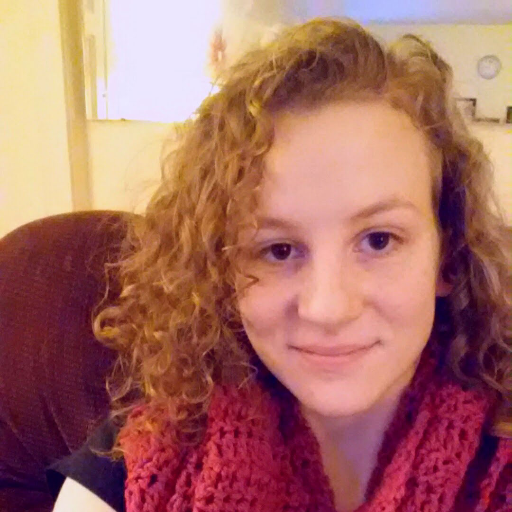

Kaitlyn
Kaitlyn is a hardware technical writer for a super computer company in Wisconsin. She is engaged to be married with two pets a dog and a cat. She has a Bachelor's degree in English Literature from University of Wisconsin - Eau Claire and is currently enrolled in online classes for a second Bachelor's degree in Computer Science.
She started crocheting when she was little, and started out with making hot pads and place mats. She enjoyed making them and found the activity to be relaxing so she slowly started to dive into more difficult designs. All in all she found making scarves to be the most enjoyable and relaxing.